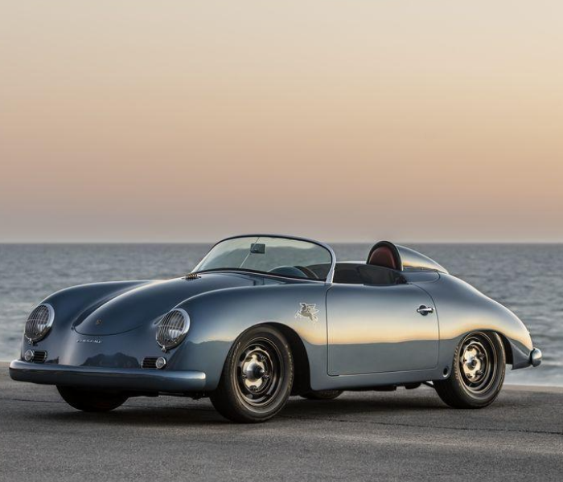
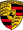
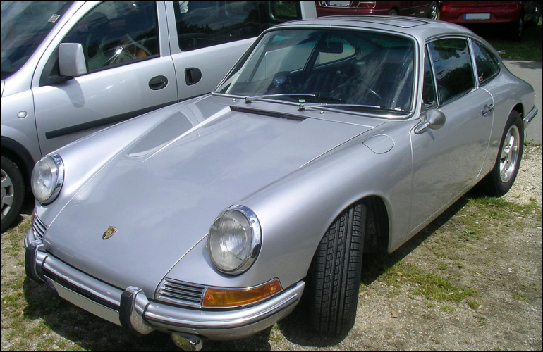

К моменту выпуска первого автомобиля под своим именем Фердинанд Порше успел накопить немалый опыт. Основанное им 25 апреля 1931 года предприятие Dr. Ing. h.c. F. Porsche GmbH под его началом уже успело поработать над такими проектами, как 6-цилиндровый гоночный Auto Union и Volkswagen Käfer, ставший одним из самых продаваемых автомобилей в истории. В 1939 году был разработан первый автомобиль компании — Porsche 64, который стал прародителем всех будущих Porsche. Для постройки этого экземпляра Фердинанд Порше использовал многие компоненты от Volkswagen Käfer.




1931—1948: От задумок к серийному производству1948—1965: Первые шаги
1963—1976: Взлет 911-го и падение 914-го
1972—1981: Правление Эрнста Фюрманна
1981—1988: Вклад нового директора
1989—1998: Десятилетие перемен
1996 — наше время: Новые модели и растущий аппетит
1931—1948: От задумок к серийному производству

Первый серийный автомобиль Porsche.

Более мощный, комфортабельный и современный преемник модели 356. Изначально назывался Porsche 901. Но у компании Peugeot были эксклюзивные права во Франции на имена машин, образованных тремя цифрами с нулём посередине. В итоге Porsche изменили название на 911.

Автомобиль был некоторое время быстрейшим серийным автомобилем Северной Петли Нюрбургринга - 7 минут 28 секунд. Этот результат был побит суперкаром Pagani Zonda F.

Первый серийный электрокар от Порше